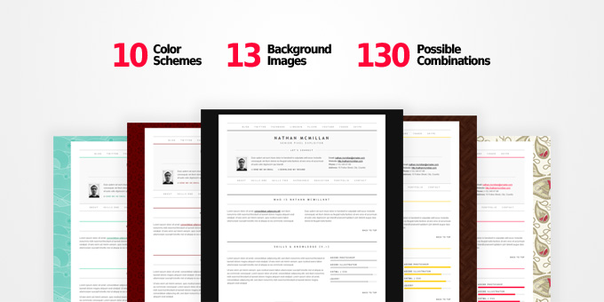

1. Before you start
Last updated: February 18, 2013
Thank you for purchasing the MinimalMe CV/Resume Template. The current documentation file is meant to provide you with the help you need to setup and customize your online CV/resume. If you find yourself in need of help that you cannot get through the information presented here, feel free to address your questions via the emailing system on QBKL Studio's ThemeForest profile page.
If you are looking for more custom work, be it web design, logo design or custom WordPress project, make sure to check out QBKL Studio's website.
Important note: This template is a XHTML(+PHP) template. It is NOT a WordPress theme, so please do not try to install it on your WordPress based website or blog. It will not work properly.
2. Installation instructions
The first choice you will have to make when installing the template is to opt for either the HTML version - which can be found in the folder named HTML - or the PHP version - found in the PHP folder. You will see both folders in the root directory of the downloaded archive.
Choosing the PHP version will enable you to use the custom and functional PHP-enabled contact form found in the right hand column of footer of the template. The HTML version does not come with contact form support and the form's place has been taken by a simple descriptive section.
PHP support
In order for the PHP-based version of the template to function properly, your server needs to be setup to interpret PHP scripts, but that's a given with most of today's hosting companies.
Installation
Setting up the template is a very easy job! Basically, all you have to do is to move (ONLY) the contents of the _HTML or _PHP folders to your FTP account, with or without the _documentation folder.
3. Settings & usage
Most template settings covered in this section are found in both the HTML and PHP versions of MinimalMe with only one exception - the contact form - which is specific to the PHP version.3.1 Setting up the contact form
In order for the contact form to function properly, you will need to set up your own email address where the emails will be delivered. To do so, you need to edit the contact-form-process.php file, located in the _PHP/lib/php/ folder. Once you have opened the file for editing, locate the following lines(7-8):
/* Setup your email address to receive emails */
define('WEBMASTER_EMAIL', 'username@emailhost.com');Once located, replace username@emailhost.com with your own email address, like in the example below:
/* Setup your email address to receive emails */
define('WEBMASTER_EMAIL', 'office@qbkl.net');Save and reupload the file to your FTP and you're done. Your contact for is ready and fully functional.
3.2 Customizing the template's color scheme and background
The template comes prepacked with 10 color schemes and 13 beautiful patterns to serve as repetitive background images to your CV. All these images are found in the img/patterns/ folder of both PHP and HTML versions. With the exception of light.gif and dark.gif all patterns are created and offered freely by Evan Eckard on DinPattern.com
3.2.1 Applying one of the preset backgrounds
The default background is based on the dark.gif image. You can see the 'default' class added to the body tag in the index.html file:
<body id="top" class="default">In order to apply one of the preset backgrounds, replace the default class with one of the following available body classes listed to the right, like in the following example:
<body id="top" class="wood">- light
- dark
- salem
- waves
- khaki
- cellar
- gunpowder
- royal
- haunted
- paisley
- subliminal
- winchester
- wood
3.2.2 Adding a custom background image
In order to add your own background image, save and upload your own file to the img/patterns/ folder. After you have uploaded your custom background, open the index.html file for editing and make sure that the <body> tag looks like the following:
<body id="top" class="default">If it does, you may close the file without changes. If not, make sure to replace it with the line above. The next step is to locate the style.css file inside the css/ folder in the root of either PHP or HTML versions, and open it for editing. On line #15 you will find the following CSS declaration:
body, body.default {
background-image: url(../img/patterns/light.gif);
}Replace light.gif with the name of the custom image you have previously uploaded to the img/patterns/ folder. Save and reupload the file and you're done.
3.2.3 Adding one of the preset color schemes
You can apply one of the template's preset color schemes by adding a custom preset class to the <body> tag like in the following example:
<body id="top" class="red">The above example will add a custom color to both the background and some of the template's HTML elements. You can always create a combination of 2 classes, one for the background image and one for the color scheme like in the following example:
<body id="top" class="paisley red">The above example adds the "paisley" background image and sets the "red" color scheme. A preview of this combination is displayed in the image below:
- yellow
- orange
- brown
- red
- pink
- purple
- blue
- cyan
- aqua
- green
3.3 Setting up the social media links
Setting up your social media profiles is pretty easy and straight forward. You need to open the index.html file found in the root folder of the template and locate the following code section:
<!-- Start: Social media -->
<div id="social_media">
<ul>
<li><a href="#" title="Blog">Blog</a></li><li><a href="#" title="Twitter">Twitter</a></li><li><a href="#" title="Facebook">Facebook</a></li><li><a href="#" title="LinkedIn">LinkedIn</a></li><li><a href="#" title="Flickr">Flickr</a></li><li><a href="#" title="YouTube">YouTube</a></li><li><a href="#" title="Yahoo Messenger">Yahoo</a></li><li><a href="#" title="Skype">Skype</a></li>
</ul>
</div>
<!-- End: Social media -->Each social media profile is displayed by a line similar to this:
<li><a href="#" title="Twitter">Twitter</a></li>Make sure that you keep and fill in the title="Edit here" attribute, as it generates the content of the link tooltip.
Skype and Yahoo Messenger links are a little bit different and you should follow the examples bellow.
Adding a Skype link:
<li><a href="skype:username-here?chat" title="Skype">Skype</a></li>Adding a Yahoo Messenger link:
<li><a href="ymsgr:sendim?username-here" title="Yahoo Messenger">Yahoo Messenger</a></li>3.4 Adding your own photo
In order to add your own photo to the template, edit a photo of your choice to the size of 60 pixels wide with 80 pixels tall - desaturate it for the black and white effect if you wish - and save it in the _PHP/img/ or _HTML/img/ folder under the name of my-photo.jpg, thus replacing the default image.
3.5 Setting up the navigation
MinimalMe uses jQuery to create a scrolling animation effect between the links in the header and the sections they are linked to. After you've set up your own content and list of section, you can adjust the navigation accordingly, by linking each item to its corresponding section. Here is the default navigation delivered with the template:
<!-- Start: Navigation -->
<div id="nav">
<ul>
<li><a href="#section1" title="Who is Nathan McMillan?">About</a></li><li><a href="#section2" title="Skills: Version 1">Skills One</a></li><li><a href="#section3" title="Skills: Version 2">Skills Two</a></li><li><a href="#section4" title="Work Experience">Experience</a></li><li><a href="#section5" title="Education">Education</a></li><li><a href="#section6" title="Portfolio">Portfolio</a></li><li><a href="#footer" title="Contact me">Contact</a></li>
</ul>
</div>
<!-- End: Navigation -->Each item in the navigation will look like this:
<li><a href="#section1" title="Who is Nathan McMillan?">About</a></li>The above item will have a tooltip with the "Who is Nathan McMillan?" text, given by the title attribute of the <a> tag. The href attribute points to the HTML element inside this template identified by the ID of "section1", and thus it will ensure the animated scroll to that item once this link is clicked. Notice the # sign before the ID, inside the href attribute. It's important that you use it to ensure internal links. Here's where this particular item will link:
<div class="section" id="section1">
<h2 class="section_title">Who is Nathan McMillan?</h2>4. Tips
In what follows you'll find some tips on how to set up your content to make it look the way you need it.
4.1 Content columns
The content of each section can be split into 2, 3 or 4 columns and combinations of columns of two thirds or 3 fourths of the available content space.
The classes available in order to split your content in columns are: half, one_third, two_thirds, one_fourth, three_fourths. The sample sections predefined in the template archive make use of all possible combinations, so I would suggest browsing through the template's code for a better understanding and a preview of their effects.
Inside the root folder of both PHP and HTML versions, along with the index.html file you will find a file called sample-columns.html. Whenever you need to add a section that contains a column model based on the above column classes, you can simple copy pieces of code from its source to give you a head start.
4.2 Skills & skill bars
Each skill is defined by a HTML code similar to the following:
<div class="skill">
<h4>Adobe Illustrator</h4>
<div class="skillbar"><div class="skillbarfill skill60">Good</div></div>
</div>You can adjust the length of the fill in the skill bar by replacing the skill60 class with one of the following available classes: skill10, skill20, skill30, skill40, skill50, skill60, skill70, skill80, skill90 and skill100.
Each of the above classes will fill the bar to a 10%, 20%, 30%... and so on to 100%.
4.3 Portfolio
You are encouraged to keep the width of the portfolio thumbnails to a maximum width of 185 pixels and also - for design reasons - keep the same height across all thumbnails.
Each <li> item in the first row must have the mt0 class applied to negate the top margin space of each portfolio item, like below:
<li class="mt0"><a href="img/sample-photos/sample-2.jpg" rel="portfolio"><img src="img/sample-photos/sample-2-tb.jpg" alt="" title="" /></a></li>Also, every fourth item should also have the last_in_row class applied to negate its right margin, so that all elements are displayed nicely from left to right in the available space. Here's a sample of such an item:
<li class="last_in_row"><a href="img/sample-photos/sample-8.jpg" rel="portfolio"><img src="img/sample-photos/sample-8-tb.jpg" alt="" title="" /></a></li>5. More help
For more help you are encouraged to use the comment system of the item's download page on ThemeForest or the emailing system on QBKL's profile on ThemeForest.
6. Credits
We at QBKL would like to extend our thanks to the developers of jQuery, jQuery form plugin, jQuery form validation plugin, jQuery Mousewheel plugin by Brandon Aaron, tipsy, Fancybox, to Olaf Ernst for the images in the ThemeForest asset library and Evan Eckard from DinPattern for the wonderful background patterns.
And of course...
Thank you, the customer, for purchasing MinimalMe!
Kind regards,
The QBKL Studio team